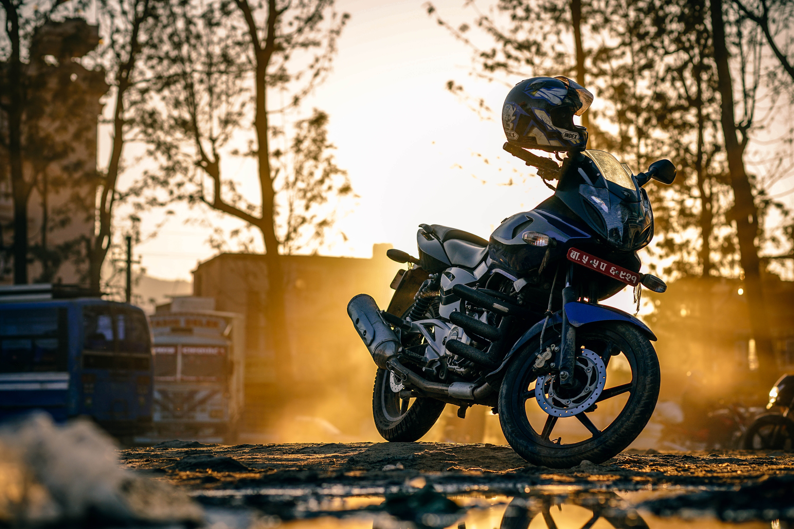
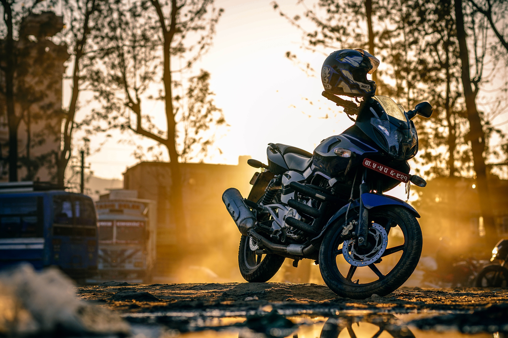

Brands
Harley-Davidson, Inc. (H-D), or Harley, is an American motorcycle manufacturer, founded in Milwaukee, Wisconsin in 1903.
One of two major American motorcycle manufacturers to survive the Great Depression (along with Indian), the company has survived numerous ownership arrangements, subsidiary arrangements (e.g., Aermacchi 1960-1978 and Buell 1987-2009), periods of poor economic health and product quality, as well as intense global competition, to become one of the world's largest motorcycle manufacturers and an iconic brand widely known for its loyal following. There are owner clubs and events worldwide as well as a company-sponsored brand-focused museum.
Noted for a style of customization that gave rise to the chopper motorcycle style, Harley-Davidson traditionally marketed heavyweight, air-cooled cruiser motorcycles with engine displacements greater than 700 cm³ and has broadened its offerings to include its more contemporary VRSC (2002) and middle-weight Street (2015) platforms.

BMW Motorrad is the motorcycle brand of the German company BMW, part of its Corporate and Brand Development division.
With the exception of the G310 series (which is produced at TVS's Tamil Nadu, India plant), all BMW Motorrad's motorcycle production takes place at its plant in Berlin, Germany. Some engines are manufactured in Austria, China, and Taiwan. The most popular model is the R1200GS and its sibling R1200GS Adventure, which sold 24,467 units – accounting for 28% of BMW's annual production. Current production includes a variety of shaft, chain, and belt driven models, with engines from 310 cc to 1,649 cc; and models designed for off-road, dual-purpose, sport, and touring activities.
BMW Motorrad has produced motorcycles since 1923, and achieved record sales for the fifth year in succession in 2015. With a total of 136,963 vehicles sold in 2015, BMW registered a 10.9% increase in sales in comparison with 2014. In May 2011, the 2,000,000th motorcycle produced by BMW Motorrad was an R1200GS.

Vespa is an Italian brand of scooter manufactured by Piaggio. The name means wasp in Italian. The Vespa has evolved from a single model motor scooter manufactured in 1946 by Piaggio & Co. S.p.A. of Pontedera, Italy to a full line of scooters and one of seven companies today owned by Piaggio.
From their inception, Vespa scooters have been known for their painted, pressed steel unibody which combines, in a unified structural unit, a complete cowling for the engine (enclosing the engine mechanism and concealing dirt or grease), a flat floorboard (providing foot protection), and a prominent front fairing (providing wind protection).
In recent years, many urban commuters have purchased new or restored Vespas. A shortage of available parking for automobiles in large urban areas and the Vespa's low running costs are two reasons for the increase in Vespa (and other scooter) popularity. The cultural use of the scooter as a recreational vehicle with a sub-cultural following in the US/Canada and parts of Europe & Japan has also contributed to the rise in Vespa ownership.

Honda is the largest motorcycle producer company in the world. The models vary from sportsbikes to economy underboones . Iconic products include the Honda Goldwing , Honda Supercub, and the Honda Fireblade.
A revolution in the motorcycle industry began in 1958 when Honda brought the C100 Super Club to the American market. It was the first Honda motorcycle sold in the U.S. The small step through design was easy to ride reliable bike. It was featured in the famous “you meet the nicest people on a Honda” marketing campaign that eventually made the C100 motorcycle the best selling motorcycle of all times. Eventually more than 30 million would be built.
They are regarded by many to be the most successful motorcycle company, with many champions being Honda riders. These include Jeremy McGrath who raced with Honda in his early career, and after leaving them for other companies, came back recently.
For more information on brands, Click Here
Styles

" Sport Bike "
BMW K1300S (Above)
A sportbike, or sports bike, is a motorcycle optimized for speed, acceleration, braking, and cornering on paved roads, typically at the expense of comfort and fuel economy by comparison with other motorcycles.
" Cruiser "
Triumph Thruxton 900 (Above)
A cruiser is a motorcycle in the style of American machines from the 1930s to the early 1960s, including those made by Harley-Davidson, Indian, Excelsior and Henderson. The riding position usually places the feet forward and the hands up, with the spine erect or leaning back slightly. Typical cruiser engines emphasize easy rideability and shifting, with plenty of low-end torque but not necessarily large amounts of horsepower. Cruisers with greater performance than usual, including more horsepower, stronger brakes and better suspension, are often called power cruisers.

" Touring "
Victory 1200 (Above)
A cruiser is a motorcycle in the style of American machines from the 1930s to the early 1960s, including those made by Harley-Davidson, Indian, Excelsior and Henderson. The riding position usually places the feet forward and the hands up, with the spine erect or leaning back slightly. Typical cruiser engines emphasize easy rideability and shifting, with plenty of low-end torque but not necessarily large amounts of horsepower. Cruisers with greater performance than usual, including more horsepower, stronger brakes and better suspension, are often called power cruisers.

" Scooters "
1967 Vespa 150 (Above)
A scooter is a type of motorcycle with a step-through frame and a platform for the rider's feet. Scooters are popular for personal transportation partly due to being more affordable, easy to operate, and more convenient to park and store than a car. Licensing requirements for scooters are easier and cheaper than for cars in most parts of the world, and insurance is usually cheaper.
For a complete list of motorcycle types, Click Here
Photos


 

Forum
Please Check Back Later For An Updated Forum! Back To Top
Contact Us
Cesar is an avid motorcycle rider and reviewer, & founder of Top Moto Club.
Contact:
Email: cpj8826@gmail.com